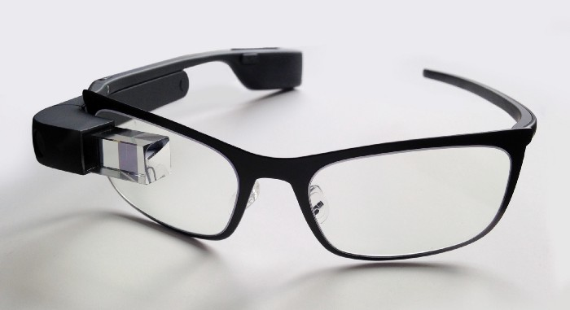

Hvordan man forklarer vitenskap, vil bli gjort med forskjellige metoder.
Blant den mest vanlige metoden for folk flest er vel gjennom en skjerm. Med en digital skjerm kan vitenskapen forklares på mange måter, med video, lyd eller tekst. Med illustrasjoner eller grafikk kan vitenskap være lett å forstå for folk flest.
Jeg ser på et vitenskaps-TV-show på min digitale skjerm, det jeg legger merke til var da forskeren skulle forklare en teori, han hadde en flaske med litt syre-væske og noen gjenstander han skulle legge syren på, for å illustrere et eksperiment. Det jeg prøver å forklare er hvordan han forklarte teorien ved det lille eksperimentet, ja jeg måtte se ham gjøre det på min digitale skjerm. Hva kan være annerledes i dette bildet av å vise eksperimentet? Jeg vil si deg, det er hvordan du mottar informasjonen om teorien og hvordan den fungerer. I tillegg, til å se showet, kan du motta denne informasjonen på andre måter, teknisk og autonomt.
Du bør motta informasjon generert av pålitelige kilder og gjennom en høyteknologisk løsning.
Denne høyteknologiske løsningen kan være en hvilken som helst enhet som bare er integrert med en "minne-sekundær hjerne" enhet. Denne sekundære hjernen drives av maskin-læring, også kalt dyp læring, nettverkstilkoblinger, kunnskaps-databaser, intelligente prosesserings-motorer.
Det har å lære hva du liker. Den har muligheten til å hente informasjon på et trinn eller en prosess du befinner deg i. La oss si at du studerer, du leser en bok om informatikk som du må lære, det du trenger å gjøre; er å lese. Men hva om du kan lagre informasjonen du må vite i en sekundær hjerne i tillegg til å ha den på din normale hjerne(gjennom øving og ved bruk av de forskjellige innlærings-sansene; hørsel og syn).
Ved at en enhet følger deg og samtidig lærer den hvordan du fungerer på din foretrukne måte å leve på. Justerbar til de grader hvis du skulle finne på å innstille deg på nytt..
Selvfølgelig er denne enheten koblet til Internett; informasjons-skyen.
Den sekundære hjernen din er en type A.I., som speider rundt Internett for informasjon. Ser gjennom de foretrukne databasene etter kategorier og systemer.
Alt den ikke finner, vil lagring og prosessering gjøre, ved å lære, sammenligne det med lignende data som er samlet inn eller allerede implementert data. Til slutt finne fram svaret i en eller annen form. Vil den bli så komplisert som hva vi snakker om at A.I. kan bli mange år frem i tid, vil vår sekundære hjerne ta fatt på de mange "enkle oppgavene" vi har i dag med tiendels sekund prosesserings kraft. Jeg tenker på hverdagslige oppgaver. De mer globale, økonomiske, samfunnskritiske og miljømessige oppgavene menneskeheten står ovenfor i dag vi bli løst av den mest kompliserte A.I.

Øyeblikkelig informasjon, vi må ha på oss noe som vil vise oss noe umiddelbart, i stedet for å hente telefonene våre.
Den første enheten i tankene er Google Glass. Det er noe som er statisk, et passivt apparat, unødvendig å samhandle med hendene dine med G-Glass. Bare av stemmen din, hvis du er personen som liker å være kort og mindre snakk med enheten din, velger du det enkle JA og NEI-alternativet, med korte ett-ord -var/kommandoer, den vil lære hva du liker, den vil være en personlig assistent og en sekundær hjerne av deg.
Enheten vil bringe all nødvendig eller relatert informasjon til stedet eller situasjonen du befinner deg i. Du vil kunne kommandere med korte ett-ords, noe som gjør opplevelsen mer komfortabel og nyttig.
- Inn i forskjellige miljøer/omgivelser? Med G-Glass - En Online A.I. - All Knowledge Database
En nyttig A.I.
- Når jeg skal inn på et toalettanlegg med mange toaletter side om side, har jeg noen alternativer, men hvilken jeg skal velge ut fra hvilket som er mindre brukt og med mindre lukt.
- Hva om jeg bruker en type G-Glass, og det vet umiddelbart når jeg går inn i et anlegg, hvilken type alternativer som er best, det er et kamera integrert med enheten som er koblet til en online A.I. med en massiv kunnskaps-database, der den finner svar på sekunder.
Den kan fortelle deg en variant av alternativer basert på miljøet rundt det, det vet og lærer av profilen din, hva du foretrekker.
- Hvis du liker det rent
- Hvis du vil være trygg
- Ønsker alternativer
- Trenger hjelp
- Informasjon
- Behov for å være sosial
- Forslag til ting du kan gjøre
Hvert alternativ er kalibrert for deg, på hvilken måte du foretrekker. Det er en veldig intelligent maskin, en enhet foran deg, den har muligheten til å gi deg svar på et mer justert nivå av ditt slag, det vil kategorisere og sortere alle alternativ fra en skala basert på hva du liker best til verre, alt i midten, alt er beregnet i prosent til fordel for deg, hoved-hjernen.
Hvordan vil det være for folk flest å ha en digital personlig assistent, som dukker opp foran deg når som helst, uansett hvor du velger å bruke den.
P-E-R-S-O-N-A-L assistent, en ting, et apparat som kjenner deg bedre enn de fleste, mer eller mindre for å måtte kjenne deg for å kunne tjene deg, på de fleste måter. Finn metoder for å sikre det på, og å ikke dele informasjon om deg med noen utenforstående, med mindre du samtykker til det, en garanti for at den tjener deg og bare deg.
Kom frem kjære apparat i denne moderne teknologi-tiden, et minne er nødvendig i deg, en sekundær tanke som kan veilede meg, gi meg en forståelse, noe som kan gi meg kunnskap i retur.